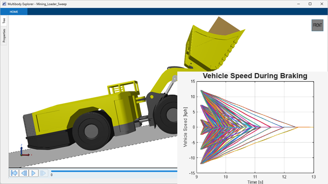
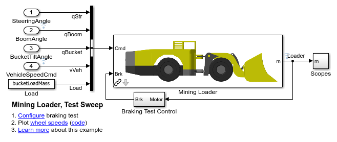
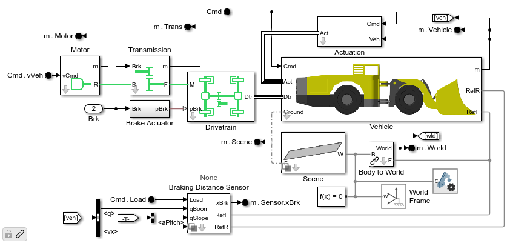
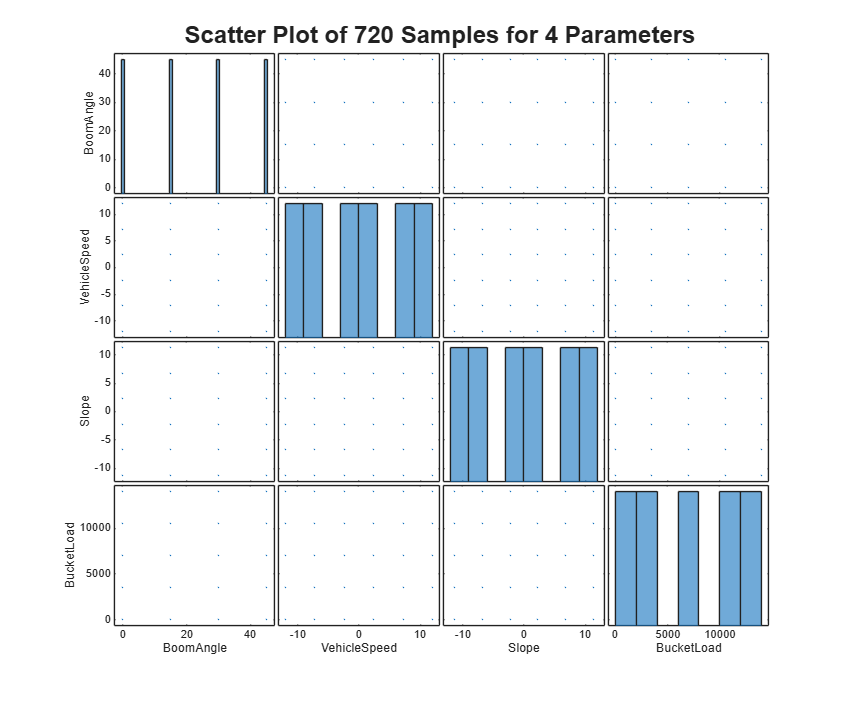
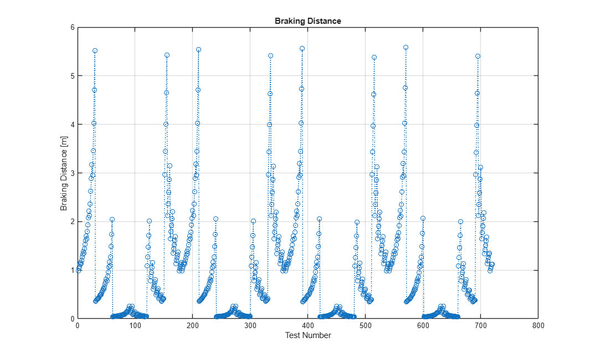
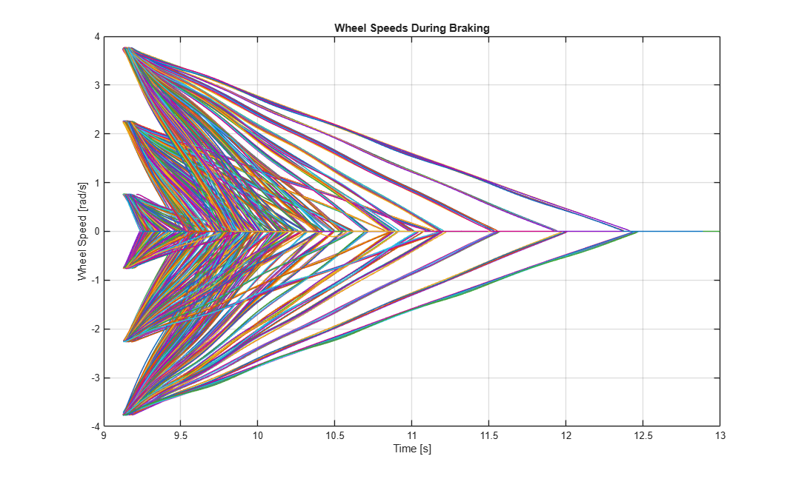
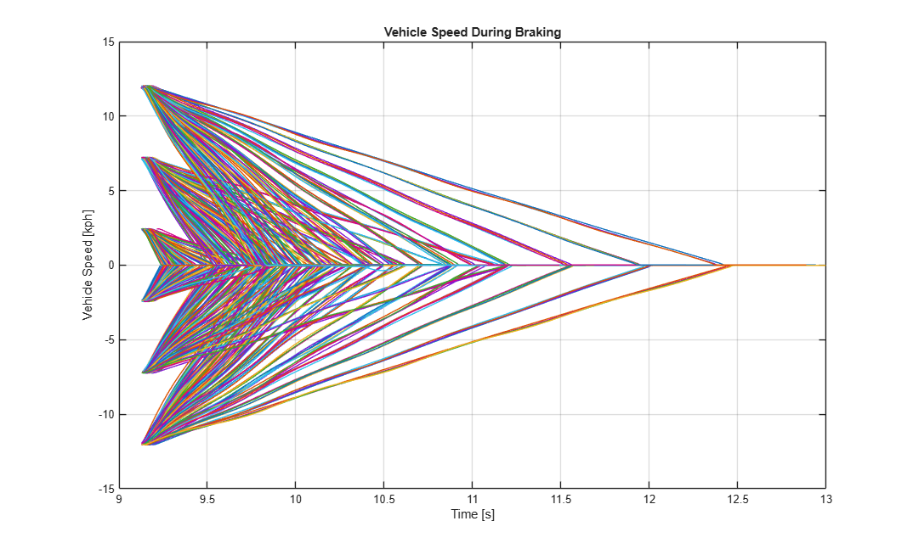
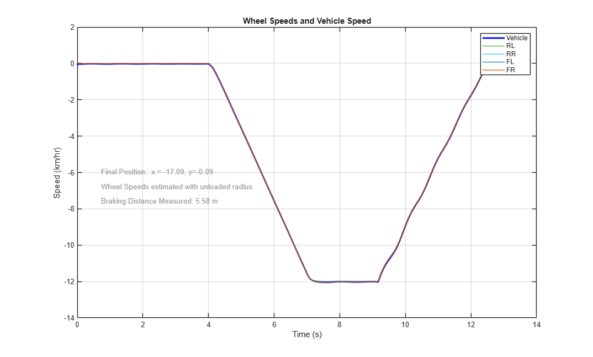

Generate Training Data by Running Design of Experiments

Contents
Overview
This example generates training data for a AI surrogate model. A simple factorial distribution of experiments is created. The simulation model is tested with those parameters and the braking distance is measured. The parameter sets and braking distance will be used to train an AI surrogate model.
The code used to create this documentation is here: vrt_brk_generate_data.m
(return to Mining Loader Design with Simscape Overview)
Open and Configure Model
The vehicle model is created using Simscape. Using MATLAB commands, we configure the model to use the simplest actuation method, prescribed motion for the steer, lift, and tilt joints. The scene is configured to use a parameterized slope, and we turn off the braking distance estimation.

Mining Loader Model
The mining loader model consists of the actuation system, powertrain, and the vehicle chassis with the implement. The surface upon which the vehicle drives can be selected as well.

Create Table of Test Conditions
A factorial distribution is used to generate the test conditions. The braking distance will increase sharply towards the edges of the parameter space (high loads, high slope, high speed). It is important to capture the limits of the operating conditions. A Latin Hypercube distribution was also tested, but it resulted in a surrogate model that was less accurate at the edges of the operating conditions.

Create Simulation Input Object
A simulation input object contains all of the model and parameter settings for the test sweep we wish to run. Each element in the input object defines an individual brake test and uses the parameters from the distribution created above.
simIn =
1×720 SimulationInput array with properties:
ModelName
InitialState
ExternalInput
ModelParameters
BlockParameters
Variables
PreSimFcn
PostSimFcn
UserString
VariantConfiguration
Run Simulations Using Parallel Computing
Using the parsim() command, the suite of tests is executed in parallel on multiple workers. Using Fast Restart, the model is only compiled once per worker. Because we have defined the design parameters as run-time parameters, we can modify their values even within the compiled model. This dramatically shortens the time it takes to execute the sweep.
Progress is reported using the Simulation Manager. We can see if any warnings or errors have occurred during any of the tests and see how long each run has taken.
Starting parallel pool (parpool) using the 'Processes' profile ... Connected to parallel pool with 4 workers.
Extract Braking Distance
The results of the sweep are passed to a function to calculate the braking distance. This is required to train the surrogate model, as it needs the test conditions and the resulting braking distance.
Number of samples in FullResultsTable:720
ans =
10×5 table
BucketLoad Slope BoomAngle VehSpeedCmd BrakingDist
__________ ______ _________ ___________ ___________
0 11.207 0 -12 0.98742
3500 11.401 0 -12 1.0362
7000 11.6 0 -12 1.0795
10500 11.8 0 -12 1.1212
14000 12.004 0 -12 1.1595
0 6.6497 0 -12 1.1375
3500 6.8466 0 -12 1.2041
7000 7.0384 0 -12 1.2647
10500 7.2335 0 -12 1.3244
14000 7.4349 0 -12 1.3795



Re-Run Test with Longest Braking Distance
In this step, we find the run with the longest braking distance and re-run just that test. During this step, we turn Simscape logging back on and animate the results. This lets us review the results of this individual test more closely.
BoomAngle VehicleSpeed Slope BucketLoad
_________ ____________ _____ __________
45 -12 11.31 14000
